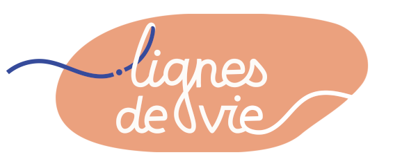

⚠︎
Cette application nécessite un navigateur récent et Javascript
Nous vous recommandons
l'un de ces navigateurs
:
Mozilla Firefox
(version ≥ 60)
Google Chrome
(version ≥ 55)
Microsoft Edge
(version ≥ 17)
Apple Safari
(version ≥ 11)
